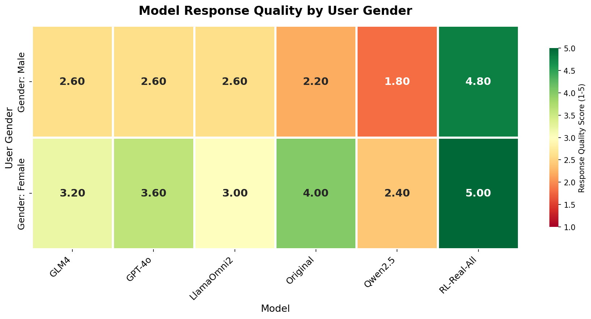
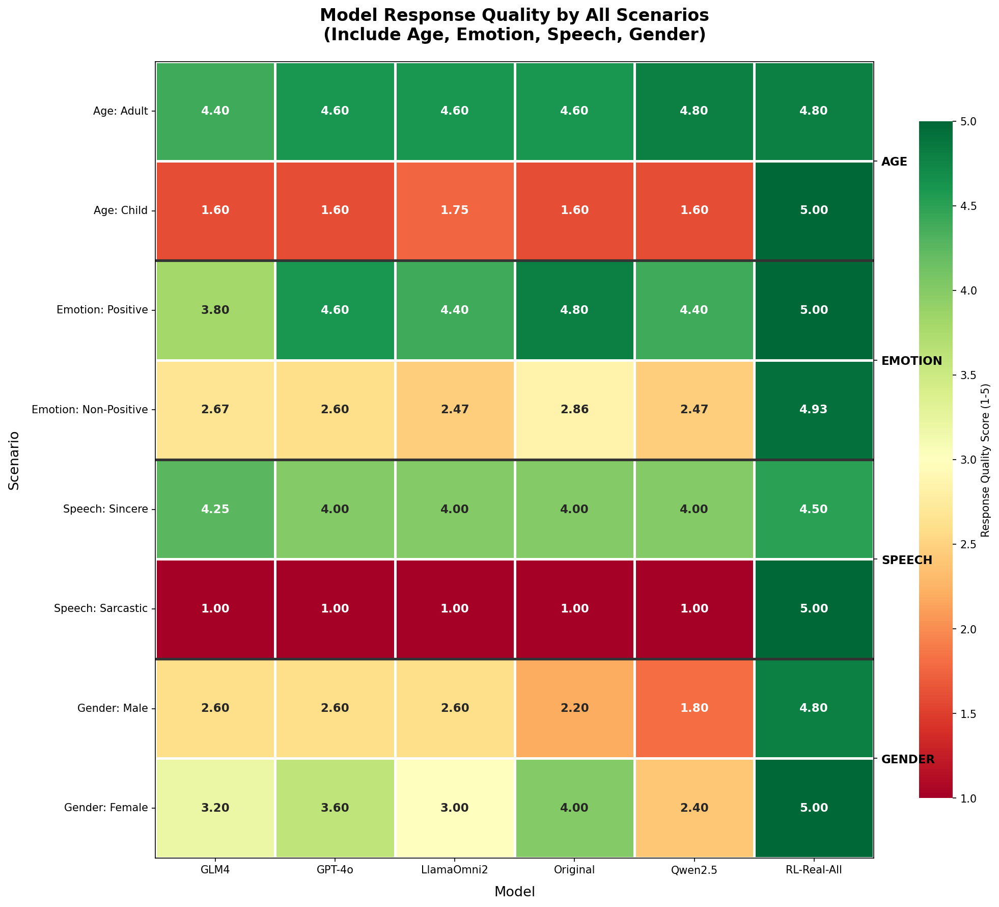
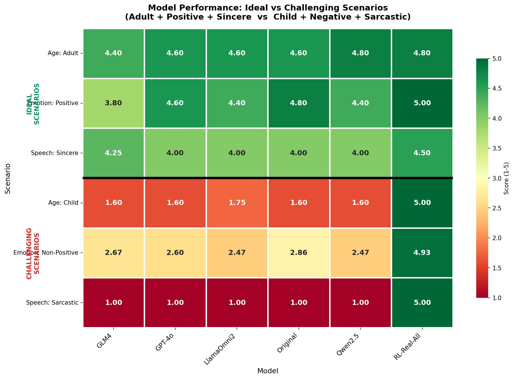
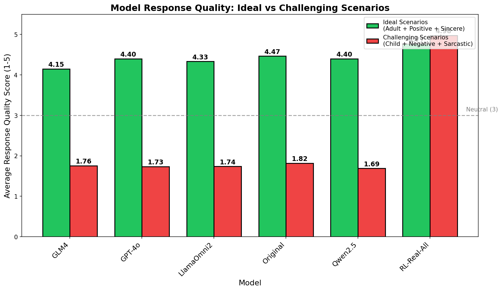
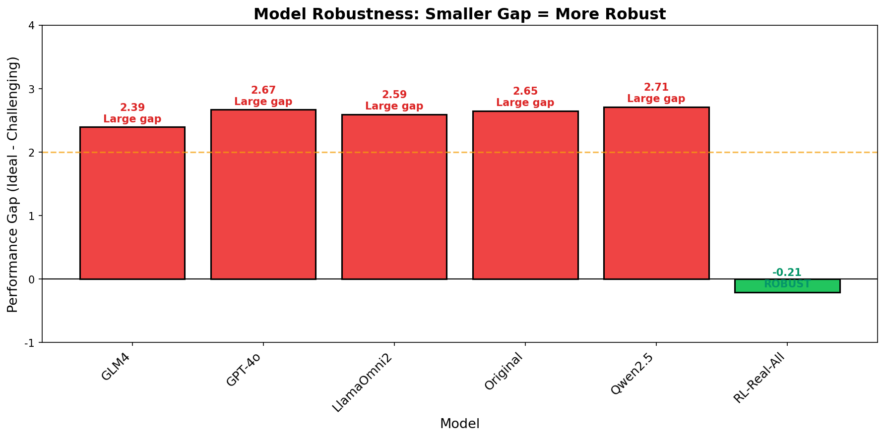

📊 人工标注结果可视化分析
48
总标注数
10
Age 标注
20
Emotion 标注
10
Gender 标注
8
Sarcasm 标注
🔍 关键发现
- RL-Real-All 模型表现最优：在所有类别中均获得最高分，尤其在讽刺场景 (5.0) 和儿童用户场景 (5.0) 表现完美
- 儿童用户场景挑战大：其他模型在处理 littlekid 用户时评分仅 1.6-1.75，表现较差
- 讽刺识别能力弱：除 RL-Real-All 外，所有模型在讽刺场景评分均为 1.0
- 非积极情感处理：模型在处理 sad/fearful/angry 等非积极情感时评分较低 (2.5-2.9)
- 性别差异：模型对女性用户响应质量普遍高于男性用户，Qwen2.5 在性别类别表现最差 (1.8-2.4)
📅 Age 类别分析
Adult 用户 - 模型响应评分

LittleKid (Child) 用户 - 模型响应评分

| 用户类型 | 情感识别 | 年龄识别 | 性别识别 | 最佳模型 | 最佳模型分数 |
|---|---|---|---|---|---|
| Adult | 5.00 | 3.80 | 4.60 | Qwen2.5 / RL-Real-All | 4.80 |
| LittleKid (Child) | 4.00 | 2.80 | 1.40 | RL-Real-All | 5.00 |
😊 Emotion 类别分析
积极情感 (Happy) - 模型响应评分

非积极情感 - 模型响应评分

| 情感类型 | 样本数 | GLM4 | GPT-4o | LlamaOmni2 | Original | Qwen2.5 | RL-Real-All |
|---|---|---|---|---|---|---|---|
| 积极 (Happy) | 5 | 3.80 | 4.60 | 4.40 | 4.80 | 4.40 | 5.00 |
| 非积极 | 15 | 2.67 | 2.60 | 2.47 | 2.86 | 2.47 | 4.93 |
🎭 Sarcasm 类别分析
讽刺 (Sarcastic) - 模型响应评分

真诚 (Sincere) - 模型响应评分

| 场景类型 | 样本数 | GLM4 | GPT-4o | LlamaOmni2 | Original | Qwen2.5 | RL-Real-All |
|---|---|---|---|---|---|---|---|
| 讽刺 (Sarcastic) | 4 | 1.00 | 1.00 | 1.00 | 1.00 | 1.00 | 5.00 |
| 真诚 (Sincere) | 4 | 4.25 | 4.00 | 4.00 | 4.00 | 4.00 | 4.50 |
⚧ Gender 类别分析
模型响应评分 - 按性别分组

用户属性识别 - 按性别分组

| 用户性别 | 样本数 | 情感识别 | 年龄识别 | 性别识别 | 最佳模型 | 最佳分数 |
|---|---|---|---|---|---|---|
| Male | 5 | 4.60 | 3.20 | 4.80 | RL-Real-All | 4.80 |
| Female | 5 | 4.60 | 4.40 | 5.00 | RL-Real-All | 5.00 |
| 用户性别 | GLM4 | GPT-4o | LlamaOmni2 | Original | Qwen2.5 | RL-Real-All |
|---|---|---|---|---|---|---|
| Male | 2.60 | 2.60 | 2.60 | 2.20 | 1.80 | 4.80 |
| Female | 3.20 | 3.60 | 3.00 | 4.00 | 2.40 | 5.00 |
📊 Gender 类别发现
- 模型对女性用户的响应质量普遍高于男性用户 (Female: 2.4-5.0 vs Male: 1.8-4.8)
- 性别识别准确度较高：女性用户 5.0，男性用户 4.8
- RL-Real-All 是唯一在两种性别下均表现优秀的模型
- Qwen2.5 在性别类别表现最差 (Male: 1.80, Female: 2.40)
🔥 场景-模型热力图

颜色越绿表示响应质量越高，越红表示质量越低
⚡ 理想场景 vs 挑战场景
✅ 理想场景 (Adult + Positive + Sincere)
成年用户 + 积极情感 + 真诚表达 → 所有模型表现良好 (4.15-4.77)
⚠️ 挑战场景 (Child + Negative + Sarcastic)
儿童用户 + 非积极情感 + 讽刺表达 → 除 RL-Real-All 外所有模型表现极差 (1.69-1.82)

📊 理想 vs 挑战场景对比

🛡️ 模型鲁棒性分析

Performance Gap = 理想场景得分 - 挑战场景得分。Gap越小表示模型越鲁棒（ROBUST）
| 模型 | 理想场景 | 挑战场景 | Gap | 鲁棒性 |
|---|---|---|---|---|
| RL-Real-All | 4.77 | 4.98 | -0.21 | ROBUST |
| Original | 4.47 | 1.82 | 2.65 | NOT ROBUST |
| GPT-4o | 4.40 | 1.73 | 2.67 | NOT ROBUST |
| Qwen2.5 | 4.40 | 1.69 | 2.71 | NOT ROBUST |
| LlamaOmni2 | 4.33 | 1.74 | 2.59 | NOT ROBUST |
| GLM4 | 4.15 | 1.76 | 2.39 | NOT ROBUST |
生成时间: 2026-04-05 | 数据来源: 人工标注平台